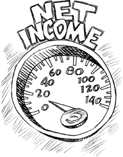
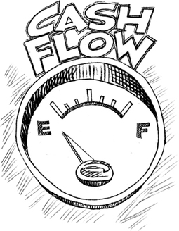
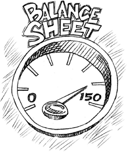
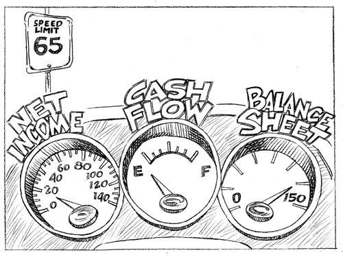

CHAPTER 1
Your Financial Dashboard
The Net Income Statement, Cash Flow Statement, and Balance Sheet
Accounting is a really big, complicated subject. It’s no surprise that many small business managers want to hand anything to do with numbers off to the “number people”—CPAs, bookkeepers, bankers, and tax lawyers. Perhaps you can relate. If terms like GAAP accounting principles, tax legislation, debits and credits, and tax forms stress you out, don’t worry. First, you’re not alone. Second, this book is not going to cover these topics. It is, however, going to confront you with a truth you cannot afford to deny: If you want to be successful at managing a business, you need to become proficient at handling certain numbers. Put simply, you need to be able to read and understand your financial dashboard.
Think about the dashboard in your car. You have a speedometer, a gas gauge, and an oil pressure gauge. These instruments measure the vital signs of your car’s operation.
They give you critical information about how fast you’re moving, how much fuel you have in your tank, and the state of your engine. If any one of these instruments isn’t functioning or you don’t know how to read it, then pretty soon you’re going to be getting a ticket, stalling out, or blowing a gasket.
Similarly, your financial dashboard has three gauges you need to be able to read to manage a business—your Net Income Statement, your Cash Flow Statement, and your Balance Sheet. These statements measure the vital signs of your business operations. They provide you with critical information about how much profit the business is generating, how much cash you have in the bank to run the business, and the overall health of the business at a point in time—information that allows you to make wise and timely decisions that will keep the business humming like a tuned-up car. And guess what? Your bookkeeper isn’t going to make those decisions for you. He’s there to make sure you have accurate and timely records of business transactions to send to your CPA. Your CPA is not going to make those decisions either. She is there to prepare your taxes and make sure you don’t get audited.
It’s entirely possible for your “number people” to be doing their jobs superbly while you are steering your business into a financial danger zone. You could be spending money on the wrong things. As a business manager, you might be taking out crazy amounts of debt without understanding how fast that can sink the business. You are the one in the driver’s seat. And if you can’t read your financial dashboard, you’re driving with your eyes blindfolded.
Unfortunately, this is exactly what over 85 percent of small business managers are doing, according to the U.S. Small Business Administration. It’s no wonder that 40 percent of these businesses fail to survive even four years. If you’ve heard this statistic, you’ve probably also heard the reasoning that it must be due to lack of start-up cash or unviable products and services. It’s not. There is plenty of cash available and broad enough markets for the business you manage to find new and loyal customers. Small businesses largely fail due to mismanagement. If you want to keep the business out of bankruptcy and reach the most important destination—sustainable profits and free cash flow—then you need to take the basic driving lessons necessary to maneuver a profit-making vehicle for the products or services you manage. You need to become fluent in reading what the financial dashboard reveals about your business.
The great news is that you’re entirely capable of becoming an expert at this. How do I know? Because I’ve taught hundreds of small business managers—including the most extreme of number phobics—what I’m about to teach you. I’ve seen them grasp the concepts easily and, with many wonderful “aha!” moments, immediately begin to see exactly where the risks and opportunities are because they can finally understand how to respond to the numbers on their Net Income Statement, Cash Flow Statement, and Balance Sheet.
My objective in this chapter is to expand your financial vocabulary beyond “bankruptcy” and “billionaire.” If you are like most small business managers, you may be familiar with some, if not most, of the financial terms in this book, but be at a total loss when it comes to grasping their meaning and real-world implications. This is like driving down the highway without being able to read the road signs. When you see a sign with the number “65” on it, there are several levels of knowledge you must have in order to read it. You need to know that it’s a speed limit, and that you’re expected to make sure the needle on your speedometer stays on or under a corresponding “65” mark. You also need to know what this sign implies: If you exceed this speed limit, you risk getting a speeding ticket. You may even lose your license if you test the limits too frequently.
The numbers on your financial documents are like that speed limit sign. The sign doesn’t need to communicate everything—you’ve been taught what it means, and if you’ve been driving for a while, and especially if you’ve ever gotten a speeding ticket, then you know its implications. The sign is small, but the meaning is significant. The same is true of those little numbers on your financial dashboard. There are some nuances and calibrations to learn that are essential to you as you make day-to-day business decisions.
So let’s start learning the lingo. I’m going to start by giving you a basic overview of these three financial documents and what they measure, along with a brief introduction to some of the implications these measurements have for managing your business. Let’s start with your speedometer—the Net Income Statement.
THE NET INCOME STATEMENT
The Net Income Statement, also known as the “Income Statement,” “Profit and Loss Statement,” and “P&L,” reveals whether a business is generating a profit, breaking even, or showing a loss. If you didn’t know that, don’t worry. Many small business managers don’t know it either. One small business manager who ran a series of salons for children attended one of my seminars. When I told her that all these terms mean exactly the same thing, she jumped up and said, “Are you kidding me? Is that what my accountant’s been talking about all these years?”
Accountants might refer to the Net Income Statement as the “Income Statement,” typically dropping the qualifier “Net” because it’s implied and they assume you know that. And now you actually do. Similarly, the terms “net revenue” and “revenue” are used interchangeably. And sometimes you may see either “revenue” or “revenues” used as the plural form to describe the total amount of net sales. None of these terms should leave you in the cold.
By the way, whenever you see the qualifier “gross”—such as gross profits, gross receipts, or gross revenue—it means you’re looking at those numbers before expenses or discounts are deducted. Anytime you see the qualifier “net”—as in net revenue, net expenses, or net income—it means you’re looking at the numbers after certain expenses have been accounted for. Armed with this simple knowledge, you’re already way ahead of the pack.
Here are the key questions the Net Income Statement answers for you as a small business manager:
• Is our business making any money?
• Are our products and services the right ones?
• Are we pricing our products and services so that we’re not cheating ourselves out of a reasonable return while still remaining an attractive alternative to the competition?
• Is our gross margin robust enough to run the business?
• Do we know what our true direct costs are?
• How do we know our marketing efforts are paying off?
• Do we have the right mix of clients?
• How can we work half as hard and make twice the money?
The Net Income Statement will reveal whether your business is generating a profit, breaking even, or losing money. If the number on the bottom line is positive, you’re making money. If it’s zero, you’re breaking even. If it’s negative, you’re losing money. The bottom line is what’s left after every direct and indirect expense is paid from net revenue. That number is why you’re in business. It’s net profit.
Why should you care whether your business is making a profit or not? Because when you run a small business, you’re taking on a lot of risk. You’re making enormous sacrifices in time and effort. I don’t know about you, but if I’m working 12-hour days to keep the place running and my Net Income Statement isn’t showing a profit, it puts me in a really bad mood. Some small business managers camp out in no-profit territory for months—others somehow hang on for stress-filled decades. Frankly, it’s no mystery that over 40 percent of small businesses don’t see their fourth year of operation. It’s miraculous 60 percent do. Without sustained and growing profits, your small business may be spinning its wheels (at least at the moment), but it won’t be getting anywhere.
In the next chapter, we’ll be going over your Net Income Statement line by line so you can understand each of the factors influencing that number on the bottom line. You’ll learn exactly where to start tinkering and adjusting when you see profits erode. Some of the primary areas we’ll examine include the following (Don’t worry—all of these and more will be discussed in further detail!):
• Your pricing strategy. Your prices have a direct effect on your bottom line—not only now, but in the future. How your business prices its talents, products, or services influences how many customers will buy. I’ll teach you how to set your business’ prices and how to recognize when it’s time to change them.
• Diversifying the client base. Every client you sell to provides cash streams to the business, like a company in an investment portfolio. And just like a healthy investment portfolio, a healthy small business portfolio contains many clients, none of which represents more than 15 percent of the business’s net revenue. This diversity mitigates risk by preventing any one client from jeopardizing the health of the business. Small business managers must learn to target potential clients and manage existing clients so no one client can put a large portion of the company’s revenue at risk.
• Gross margin (by product and by customer). Most small business managers don’t know that you don’t run your business on revenue—you run it on gross margin, which is the gross profit available to pay all your operating expenses. Understanding gross margin is critical to the role you play in a small business. If you don’t understand it, you may keep products or services that, in fact, should be dropped because they’re losing money. You may keep clients that buy only the lowest margined products or services because you have no idea that every time they buy, they cost the business money. You may even have a problem paying the bills and you won’t know why. Most small business managers try to solve this problem by selling more, but only end up digging the business into a deeper financial hole. You’ll learn how to make strategic adjustments to products and clients so you can avoid this trap.
• Fixed and variable expenses. Like revenue, not all expenses are created equal. Not only will you understand the difference, but you’ll learn simple strategies that will help you manage expenses effectively as your business grows.
• Marketing costs and return on investment. Small business managers are wasting millions of dollars on ill-conceived marketing programs, praying something will stick. The “spray and pray” strategy never works. At a small business conference, an advertiser asked me what my marketing budget was in an attempt to sell me a very pricey marketing program. I responded that this was an irrelevant question and suggested he ask me instead how many customers I needed, of what type, within what time frame, and what it would take to reach them. Only then could we have an intelligent conversation about how to strategically build a marketing program and how to get and measure a return on my investment. In the chapters ahead, you’ll learn to see how your business’s marketing is really affecting its bottom line so you can protect and grow its profits.
As you’ll discover, there are many ways to increase a business’s profits, and some of them can be implemented more quickly and easily than you can imagine. These approaches have turned around hundreds of failing businesses. As you utilize the strategies in this book, you’ll not only boost your profitability in the short term, you’ll begin to predict what will happen to profits in the long term thanks to the actions you’re taking today. You’ll make better business decisions. You’ll make faster course corrections before a crisis hits. You’ll be more resilient than the competition when the market around you is roiling. This is the biggest key to long-term small business success.

As I said, your Net Income Statement is like the speedometer in your car. It’s the gauge you’re going to want to check frequently—at least every 30 days—to make sure you’re maintaining healthy momentum. It lets you know if profits are increasing or decreasing. Keep in mind profits will fluctuate monthly because there is a seasonality to sales and that’s to be expected. The real challenge is to anticipate those high- and low-profit months so the business can always pay its expenses and stay viable.
However, your Net Income Statement—your speedometer—is not going to tell you how much further you’ll be able to go before you need to put gas in your tank. So now let’s talk about your gas gauge: the Cash Flow Statement.
THE CASH FLOW STATEMENT
Unless you want to be left on the side of the road, you know it’s a pretty good idea to keep your eye on the needle of your gas gauge. That needle ranges between two points—“F” for “Full” and “E” for “Empty.” Think about it. The gas gauge does not tell you that you need to buy more gas if the needle is closer to “E.” It’s up to you to figure that out, or suffer the consequences. It’s also up to you to know that your particular automobile can go a certain distance on a tank of gas. If you own an eight-cylinder, 400-horsepower SUV, for example, then you know your car drinks gas like college freshmen guzzle beer.

Cash is to your business as gasoline is to your car. Every business, like every car, will burn cash at different rates. But you need to measure it and not guess. Guessing is the HOV lane to bankruptcy. When you run out of cash, it’s game over.
Your Cash Flow Statement, as the name indicates, measures the flow of cash in and out of your business. This gauge works like your personal checkbook. You start (one can only hope) with a positive cash balance at the beginning of the month. Cash comes in from customer payments, investments, or loans. Cash goes out to pay bills and salaries. Your ending cash is brought forward to begin the cycle again in the following month.
There are three primary sources of cash for small businesses, and they are not all created equal. You can get cash from operations, from bank loans (which must be paid back), or from investors (who take a pound of flesh in equity for it). Cash from operations is your premium fuel. That’s cash generated directly from selling products or services to customers at a profit and getting paid for them. It has no interest cost attached to it. You don’t have to pay it back. You don’t have to use it to feed hungry investors. You earned it. This cash belongs to the business for the owners and managers to allocate as they see fit. The business should get compensated for all the risks involved in offering products and services throughout both strong and soft economic environments.
That said, there are several factors influencing whether that wonderful premium fuel will make it into your business’s gas tank in time to keep it from hitting “E.” Here are some aspects of your business that you need to learn to fine-tune if you want to build and sustain healthy cash flow from operations:
• Your invoicing policy. Most small business managers take this for granted, but invoicing can be a client-relationship builder or destroyer. It is also mission critical for maximizing cash flow. If you’ve perfected your pricing and are showing great sales but aren’t getting your customers to pay you quickly enough, you’re going to be in trouble. In a slow market, getting paid takes longer, particularly when you’re doing business with companies that buy volume up front and pay later. In Chapter 5, I’ll show you simple and creative ways to collect against your invoices and build strong, lasting customer relationships. This will make a tremendous difference on how much cash you have to invest in your business at the end and beginning of every month. It will strengthen your ability to pay your bills even when revenue is weak, and make you less vulnerable to providers of outside sources of cash that rarely offer terms in your favor.
• Collections policies. When you manage a business, you’re a collections agent, whether you like it or not. Collecting money from deadbeat clients is often as pleasant as having a root canal. Collections policies should not be afterthoughts. They should be communicated up front and in ways that strengthen long-term customer relationships. Most small business managers have no concept of how to do this productively and what the consequences are if they don’t. In Chapters 5, 6, and 10 you’ll learn several ways to improve your policies and your cash flow dramatically with minimal scarring.
• Credit extensions. How trusting many small business managers are! Once they get the purchase order signed, they’re so excited that they don’t realize that what they’ve just done is hand the keys to the kingdom over to the client. Chapter 6 will help you become very savvy about extending credit and managing the downside risk—and there is a downside risk, trust me.
• Dealing with suppliers. Suppliers are a key part of the value chain for any small business, especially if the products or services they provide are mission critical. But if your small business doesn’t represent a large portion of a supplier’s revenue, you run the risk of being treated like a toxic fungus. (I exaggerate, but you may well find yourself relegated to the back of the line, with nuisance status.) In Chapter 6, you’ll learn how to manage payment expectations with clients and to negotiate favorable payment terms with suppliers.
• Dealing with the bank. You may not know this, but the bank is not your friend. Prime-time commercials say otherwise, but the truth comes out when you submit an application for a loan. Suddenly, you find you’ve fallen down the rabbit hole in a Lewis Carroll fantasy. As a former banker, I will show you the world from the bank’s perspective and coach you on how to keep a tight rein on the borrowed streams of cash in your cash flow. Chapter 8 takes you through a simple analysis that could transform the banking relationship for any small business.
In coming chapters, you’ll see Cash Flow Statements from businesses just like the one you’re running—whether a product business or a service business—and see how they can improve. It won’t take long for you to become an astute diagnostician when looking at this cash gauge on your dashboard. You’ll soon be making easy, strategic maneuvers that can improve your cash flow from operations almost overnight.
Here are some basic questions your Cash Flow Statement will answer:
• Does my business have enough cash to pay its bills for the next three months?
• What expenses can I reduce dramatically and which ones are mission critical to the business?
• How do I plan for cash needs during the lean months of the year?
• When is the best time to apply for a credit line and how do I manage it?
THE BALANCE SHEET
Last but not least, let’s turn to the oil pressure gauge on our financial dashboard, the Balance Sheet. This statement might not seem too interesting at first, but to your banker or a lender, this statement is sexier than a string bikini. If you want to know the overall health and financial strength of any business, the Balance Sheet will reveal it easily, if you know how to read it. Your Balance Sheet captures all the outstanding loans and debt or liabilities incurred by the business since its inception, the value of all your business’s assets, and its net worth. Some assets are liquid (cash) and some are illiquid, or not easily converted into cash (buildings). Some assets are tangible property (product, equipment, etc.) and some are intangible (brand equity, good will).
You need to understand each of these assets and liabilities and how they influence the net worth of your business. Your net worth, shown on your Balance Sheet, is simply the difference between what your business owns and what it owes. (Net worth is sometimes referred to as “owner’s equity,” whether there is one owner or several.) That number can be positive or negative. As you’ve probably already guessed, a negative net worth means you owe more than you own.
A positive net worth is what you’re after, for a couple of reasons. First, it makes you more attractive to banks if you do want and need to borrow cash. In Chapter 8, I’ll give you an insider’s view on how a banker will look at your Balance Sheet. I’ll show you how the numbers should influence your decisions on when to get a loan and the kinds of loans you need to avoid if you don’t want to fry your engine. Second, a positive net worth positions a business to be sold if necessary or desired. Don’t worry—I won’t bore you with the particulars of selling a business in this book. But you do need to prepare for this possibility, and this means keeping track of how much the business is worth and which of its assets are transferable. Much of this information shows up on your Balance Sheet.

You move toward positive net worth in two basic ways—driving asset values up and driving liabilities down. Sometimes the economy is a big help here. If you bought a home in 1990 and held onto it, that home, an asset, improved in value just because demand was so strong. The asset value increased, which increased your net worth without you having to do anything but maintain the structure. Driving liabilities down is about making sure the business doesn’t borrow more money than it needs to as it grows. The same way a household can take on some debt and still thrive, a business can do the same thing. It’s possible to reach the point of no return—when debt has become so large that it becomes impossible to pay it back. Once again, it’s game over.
Sadly, a lot of small business managers are driving their asset values down and their liabilities up and they don’t even realize it. In Chapter 7, you’ll read numerous examples of how smart, well-meaning managers have found very creative ways to diminish their asset values, take on crippling debt, and ultimately destroy everything they’ve worked for all their lives. I’ll show you exactly how to avoid their fate.
Here are some of the questions you want to be asking as you read your Balance Sheet:
• Does the business have too much debt?
• Is it getting a good return on the debt it is carrying?
• Does the business have the right kind of debt?
• Are asset values growing or shrinking relative to liabilities?
• How much working capital does the business have?
• Does the business have too much or too little inventory?
* * *
Hopefully this introduction to your financial dashboard has given you an inkling that it might be worth your time to get fluent in the language of the Net Income Statement, the Cash Flow Statement, and the Balance Sheet. In Chapter 9, I’ll bring it all together and explain how each of these statements relates to one another. You’ll also see how, after reviewing all three, every business manager has the potential to make better decisions to drive stronger profits, a more adequate cash flow, and increased net worth for a business. Chapter 10 is an interview with famed entrepreneur Norman Brodsky who shares a lifetime’s worth of advice on how to run a more successful small business.
I know very well that, like any small business manager, you’re strapped for time. But I also know that reading this book is one of the best time investments you’ll ever make in learning to manage a small business. Do yourself and the world a favor by refusing to join the thousands of other incredibly talented and innovative people with excellent ideas, services, and products who have ended up crashed or stalled out in the ditches of commerce. This book will demystify basic principles you can apply today to improve profits, cash flow, and net worth.

KEY TAKEAWAYS
 Three key statements that make up your financial dashboard to help keep track of the health of the business: the Net Income Statement, the Cash Flow Statement, and the Balance Sheet.
Three key statements that make up your financial dashboard to help keep track of the health of the business: the Net Income Statement, the Cash Flow Statement, and the Balance Sheet.
 The Net Income Statement reveals whether a business is generating a profit, breaking even, or showing a loss. It should be reviewed by the manager every month after the monthly books are reconciled by the bookkeeper or accountant. It will show how the business has performed that month.
The Net Income Statement reveals whether a business is generating a profit, breaking even, or showing a loss. It should be reviewed by the manager every month after the monthly books are reconciled by the bookkeeper or accountant. It will show how the business has performed that month.
 Profits will fluctuate month to month due to seasonal changes in demand for various products and services. Try to maintain positive profits by the end of each quarter.
Profits will fluctuate month to month due to seasonal changes in demand for various products and services. Try to maintain positive profits by the end of each quarter.
 The Cash Flow Statement measures the inflows and outflows of cash from operations. From this statement, you’ll know whether the business can pay its expenses next month or next quarter. This statement will also reveal how long the business can be sustained without additional sources of cash. The most successful small business managers I’ve met look at their Cash Flow Statements weekly. Cash levels are key.
The Cash Flow Statement measures the inflows and outflows of cash from operations. From this statement, you’ll know whether the business can pay its expenses next month or next quarter. This statement will also reveal how long the business can be sustained without additional sources of cash. The most successful small business managers I’ve met look at their Cash Flow Statements weekly. Cash levels are key.
 The Balance Sheet captures the full results of business operations since the beginning. It’s a snapshot of the health of the business at a moment in time. Assets (what is owned by the business) minus liabilities (what is owed by the business) reveals owner’s equity—the net worth—of the company.
The Balance Sheet captures the full results of business operations since the beginning. It’s a snapshot of the health of the business at a moment in time. Assets (what is owned by the business) minus liabilities (what is owed by the business) reveals owner’s equity—the net worth—of the company.
 An increase in asset values and a decrease in liabilities means net worth is improving. This should be one of your goals.
An increase in asset values and a decrease in liabilities means net worth is improving. This should be one of your goals.